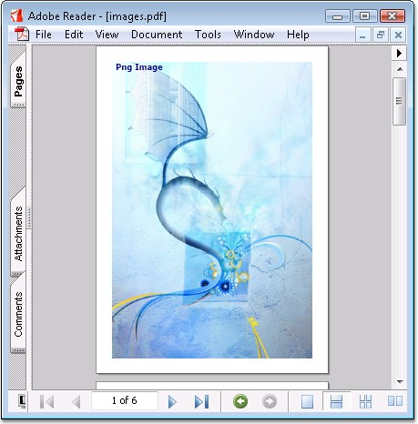
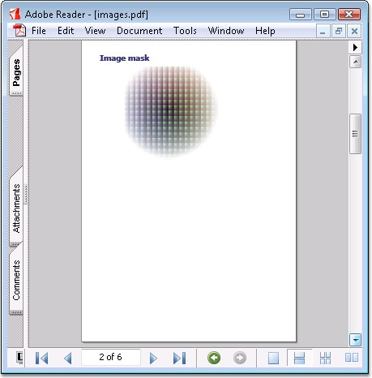
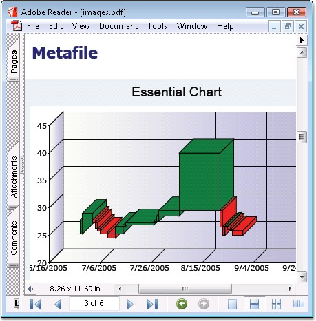
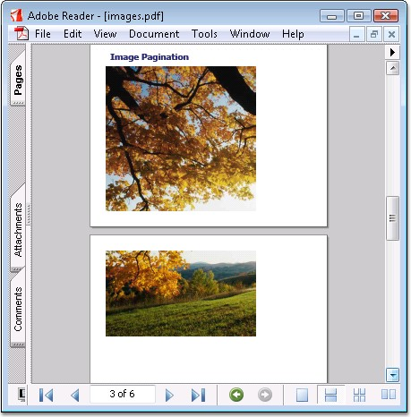
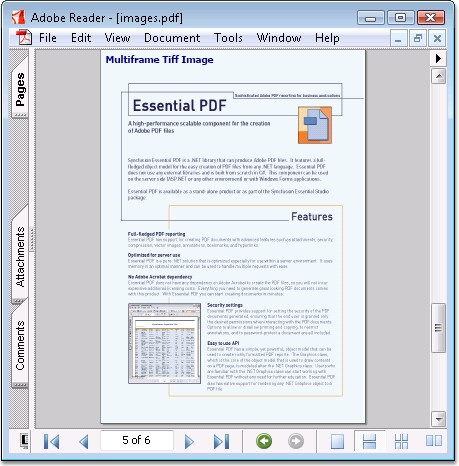

Essential PDF consists of a comprehensive set of APIs that are used to create Adobe PDF documents with text and rich graphics including custom drawing and images. It also has support for loading images from the following objects:
· Streams
· Files on disk
· System.Drawing.Bitmap
You can resize and insert images into the PDF document at the required size, and specify the image quality by using the Quality property.
 Advanced
features like transparency and soft masking are supported.
Advanced
features like transparency and soft masking are supported.
The following code snippets illustrate drawing images of different formats in a PDF document.
|
[C#]
//Draw bitmage image with image size PdfImage image = new PdfBitmap(pngImage); g.DrawImage(image, 0, 0, image.Width, image.Height);
//Draw metafile PdfMetafile metafile = new PdfMetafile(emfImage); g.DrawImage(metafile, new PointF(0, 50));
//Image pagination jpg image = new PdfBitmap(jpgImage);
//Set layout format for paginate the image to multiple pages. PdfLayoutFormat format = new PdfLayoutFormat(); format.Layout = PdfLayoutType.Paginate; PointF location = new PointF(0, 400); SizeF size = new SizeF(400, -1); RectangleF rect = new RectangleF(location, size); image.Draw(page, rect, format);
//Multiframe Tiff image PdfBitmap tiffImage = new PdfBitmap(multiframeImage); int frameCount = tiffImage.FrameCount; for (int i = 0; i < frameCount; i++) { page = section.Pages.Add(); section.PageSettings.Margins.All = 0; g = page.Graphics; tiffImage.ActiveFrame = i; g.DrawImage(tiffImage, 0, 0, page.GetClientSize().Width, page.GetClientSize().Height); }
//Specify the quality of bitmap image PdfBitmap image1 = new PdfBitmap(Image.FromFile("image.bmp"));
//Specify the quality of Metafile image // Create metafile
image
// Specify the quality of
the metafile |
|
[VB.NET]
'Draw bitmage image with image size Dim image As PdfImage = New PdfBitmap(pngImage) g.DrawImage(image, 0, 0, image.Width, image.Height)
'Draw metafile Dim metafile As PdfMetafile = New PdfMetafile(emfImage) g.DrawImage(metafile, New PointF(0,50))
'Image pagination jpg Dim image = New PdfBitmap(jpgImage)
'Set layout format for paginate the image to multiple pages. Dim format As PdfLayoutFormat = New PdfLayoutFormat() format.Layout = PdfLayoutType.Paginate Dim location As PointF = New PointF(0, 400) Dim size As SizeF = New SizeF(400, -1) Dim rect As RectangleF = New RectangleF(location, size) image.Draw(page, rect, format)
'Multiframe Tiff image Dim tiffImage As PdfBitmap = New PdfBitmap(multiframeImage) Dim frameCount As Integer = tiffImage.FrameCount Dim i As Integer = 0 Do While i < frameCount page = section.Pages.Add() section.PageSettings.Margins.All = 0 g = page.Graphics tiffImage.ActiveFrame = i g.DrawImage(tiffImage, 0, 0,page.GetClientSize().Width,page.GetClientSize().Height) i += 1 Loop
'Specify the quality of bitmap image Dim image1 As New PdfBitmap(Image.FromFile("image.bmp")) image1.Quality = 50 page.Graphics.DrawImage(image1, New PointF(0, 0))
'Specify the quality of Metafile image ' Create metafile image Dim metafile As PdfMetafile = DirectCast(PdfImage.FromImage(img), PdfMetafile) ' Specify the quality of the metafile metafile.Quality = 50 |

Figure 39: Drawing PNG Image

Figure 40: Drawing Image Mask

Figure 41: Drawing Metafile Image

Figure 42: Illustrates Image Pagination

Figure 43: Drawing TIFF Image